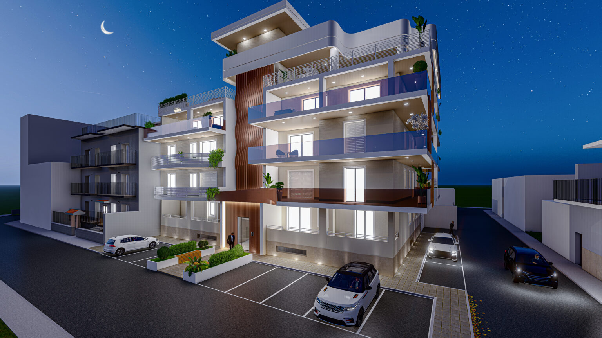

Le fondamenta
Giovanna Forte e Giuseppe Esposito danno inizio alla storia dell’impresa.

DOMENICO RUSCIANO · CEO DI EDIL FORTE
Costruire è lasciare un segno.
Farlo bene è guardare avanti.
01 / LA PERSONA
Domenico Rusciano CEO di Edil Forte
Radici solide.
Lo sguardo rivolto a ciò che verrà.
Alla guida di Edil Forte dal 2013, Domenico Rusciano porta avanti una storia imprenditoriale iniziata nel 1982. Un percorso che unisce l’esperienza di famiglia a una nuova attenzione per l’efficienza energetica, i materiali e la qualità dell’abitare.
02 / DAL SEGNO ALLO SPAZIO
Ascolto, competenza e una visione d’insieme.
È così che un’idea comincia a prendere forma.
Ogni progetto comincia dalle esigenze delle persone.
L’esperienza incontra materiali, tecnologie e cura dei dettagli.
Un’edilizia attenta all’efficienza energetica e alla qualità dell’abitare.
03 / ARCHITETTURE, NON SOLO IDEE
LE RADICI DI EDIL FORTE
Giovanna Forte e Giuseppe Esposito danno inizio alla storia dell’impresa.
Domenico Rusciano diventa CEO di Edil Forte.
Un progetto residenziale prende forma a Casoria.
Viene annunciato un progetto orientato a sostenibilità e comfort.
04 / COSTRUIAMO UN DIALOGO
Un’idea, un incontro, una nuova possibilità.
Parliamone insieme.